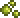
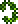

Травяной клинок
Травяной клинок (Blade of Grass) — меч, наносящий 18 ед. урона и имеющий среднюю скорость. При ударе задевает блок за персонажем. При взмахе оставляет за собой частицы, как от срезаемых лиан/травы. Так же с каждым ударом выпускает 1 лист который наносит урон и отравляет врагов.
В отличие от Мурамасы, если зажать ЛКМ, он не будет махать без остановки, что делает его менее эффективным. Но зато отталкивание и размер больше, чем у Мурамасы, что очень удобно при сражении против быстрых монстров.
Травяной клинок

Характеристики
Тип Оружие Меч
Урон 18

Скорость 20 (Очень быстрая)
Атак/сек 3
Крит. шанс 11%
Отбрасывание 5 (Среднее)
Редкость Оранжевая
Продажа 54

Лучшая модификация Легендарный
Кол-во исследований 1 исследование
Рецепт
Рабочие места:

Железная наковальня

Свинцовая наковальня
Ингридиент(ы):
 Грань ночи
Грань ночи
 Споры джунглей 15шт

Жало 12шт
 Лоза 3шт